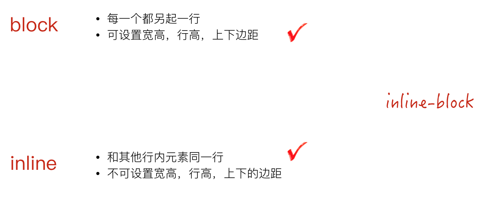

深入了解 inline-block
概述
我们知道，block 元素每个都会新起一行，而 inline 元素又不能设置宽高等，那么有没有办法可以实现一个元素既能设置宽高，又可以在行内显示呢？
这就是 inline-block 元素，它综合了 block 元素与 inline 元素的一些特点，从而形成它自己的一些优势，如下图：

下面我们来个简单的示例，如下：
<div class="list">
<div class="item"></div>
<div class="item"></div>
<div class="item"></div>
</div>
.list .item {
display: inline-block;
width: 100px;
height: 100px;
background: #ccc;
}
效果图如下：
这样，我们本来是块级元素的 item，将会在一行显示，当然同样我们也可以把 item 元素的标签换成 span，会发现可以设置了宽高。
虽然 inline-block 有着 block 与 inline 结合的好处的，在某些布局上可以贡献些力量，但是同时它也存在一些问题。
水平间隙问题
我们创建一个导航列表，并将其列表 item 设置为 inline-block，主要代码如下：
<div class="nav">
<a class="nav-item" href="#">导航</a>
<a class="nav-item" href="#">导航</a>
<a class="nav-item" href="#">导航</a>
</div>
.nav {
background: #999;
}
.nav-item{
display:inline-block; /* 设置为inline-block */
width: 100px;
background: #ddd;
}
效果图如下：

我们从效果图中可以看到列表 item 之间有一点小空隙，但是我们在代码中并没有设置 margin 水平间距。那么这个空隙是如何产生的呢？
这是因为我们编写代码时输入空格、换行都会产生空白符。而浏览器是不会忽略空白符的，且对于多个连续的空白符浏览器会自动将其合并成一个，故产生了所谓的间隙。
对于上面实例，我们在列表 item 元素之间输入了回车换行以方便阅读，而这间隙正是这个回车换行产生的空白符。
同样对于所有的行内元素（inline，inline-block），换行都会产生空白符的间隙。
如何消除空白符
从上面我们了解到空白符，是浏览器正常的表现行为。但是对于某些场景来说，并不美观，而且间隙大小非可控，所以我们往往需要去掉这个空白间隙。一般来说我们有两种方法来去掉这个换行引起间隙：代码不换行和设置 font-size。
代码不换行
我们了解到，由于换行空格导致产生换行符，因此我们可以将上述例子中的列表 item 写成一行，这样空白符便消失，间隙就不复存在了。其代码如下：
<div class="nav">
<div class="nav-item">导航</div><div class="nav-item">导航</div><div class="nav-item">导航</div>
</div>
但考虑到代码可读及维护性，我们一般不建议连成一行的写法。
设置 font-size
首先要理解空白符归根结底是个字符，因此，我们可以通过设置 font-size 属性来控制其产生的间隙的大小。我们知道如果将 font-size 设置为 0，文字字符是没法显示的，那么同样这个空白字也没了，间隙也就没了。
于是顺着这个思路就有了另一个解决方案：通过设置父元素的 font-size 为 0 来去掉这个间隙，然后重置子元素的 font-size，让其恢复子元素文字字符。
所以该方法代码如下：
.nav {
background: #999;
font-size: 0; /* 空白字符大小为0 */
}
.nav-item{
display:inline-block;
width: 100px;
font-size: 16px; /* 重置 font-size 为16px*/
background: #ddd;
}
使用该方法时需要特别注意其子元素一定要重置 font-size，不然很容易掉进坑里（文字显示不出来）。
垂直间隙问题
由于 inline-block 垂直对齐使用的是 vertical-align 属性，而该属性默认的对齐方式为 baseline，在前面 IFC 的 demo 中，我们已经了解到，基线的位置为小写英文字母x的下端沿。该线离底线（text-bottom）还是有点距离的。
下面以实例论证，如下：
<div style="background: #ccc;"><img src="next-banner.png" alt="前端工程师 NEXT 学位"></div>
效果图如下：
按道理来说，div 的高度应该是图片撑开的高度，所以不可能看到如图所示的大概 3px （不同的字体大小，这个灰色间隙会不一样）的背景色。所以为了解决这个问题，我们可以设置 img 的 vertical-align 的值为 middle，text-top，text-bottom都可以（前提是父元素 line-height 计算的高度要小于图片的高度）。
所以一般为了避免这个垂直的间隙，在设置 inline-block 的时候，还需要顺手带个 vertical-align: middle;
其余对齐方式可参考：行内级元素垂直对齐方式